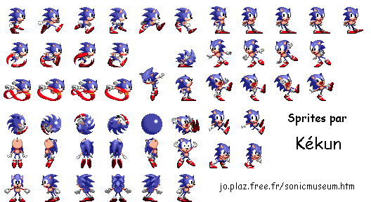

Beaucoup de jeux utilisent des sprites animés pour créer les animations des personnages.
Avec ou sans Phaser, la technique d'animation est toujours la même. Nous utiliserons le principe du dessin animé : faire défiler des images fixes.
Voici les séries d'images fixes que nous allons utiliser dans cette activité.
Vous trouverez cette image ici.
Comme vous pouvez le constater, cette image au format png, va nous permettre de gérer plusieurs animations. Par exemple, si nous prenons les 6 premières représentations de Sonic (en partant en haut à gauche), il est évident que leur enchaînement rapide à l'écran donnera l'impression que Sonic est en train de marcher vers la droite .
Sans Phaser, le code à écrire pour mettre en place cette animation serait relativement long. Avec Phaser, c'est un jeu d'enfant.
Pour commencer, nous allons (par la pensée) découper notre image .png (que nous appellerons désormais "spritesheet") en petites vignettes de 48 pixels de large et 48 pixels de haut. À l'aide d'un logiciel de dessin standard, vérifiez que chaque petite vignette contient bien un dessin de Sonic. Ces vignettes vont être ensuite numérotées en partant d'en haut à gauche. Par exemple, la première vignette de la deuxième ligne portera le numéro 11 (la première vignette de la première ligne porte le numéro zéro).
Saisissez, analysez et testez ce code afin de comprendre l'utilisation des sprites animés (n'oubliez pas de placer le fichier "sonicsprites.png" dans le dossier asset).
var game = new Phaser.Game(800,600,Phaser.AUTO,'content',{preload: preload, create: create,update:update});
function preload(){
game.load.spritesheet('spriteSonic','asset/sonicsprites.png',48,48);
}
function create(){
sonic=game.add.sprite(400,300,'spriteSonic');
sonic.anchor.setTo (0.5,0.5);
sonic.animations.add('marche',[0,1,2,3,4,5],10,true);
sonic.play('marche');
}
function update(){
}
Remarques sur le code du "À faire vous même 6.1" :
Dans la fonction "preload", nous ne chargeons plus une image, mais un spritesheet (série d'image composant les différentes animations) :
game.load.spritesheet('spriteSonic','asset/sonicsprites.png',48,48);
Le premier paramètre 'spriteSonic' est le nom du spritesheet, le second 'asset/sonicsprites.png' correspond au chemin vers le fichier "sonicsprites.png", ensuite nous avons la largeur des vignettes : 48 et enfin la hauteur des vignettes : 48.
sonic=game.add.sprite(400,300,'spriteSonic');
rien de nouveau, nous créons un sprite comme dans les exemples précédents.
sonic.animations.add('marche',[0,1,2,3,4,5],10,true);
cette ligne nous permet de créer une animation, voici les différents paramètres de la fonction add :
sonic.play('marche');
permet de jouer l'animation
Sachant qu'il est possible :
sonic.frame=6;
sonic.animations.stop();
Écrivez un programme permettant de mettre en place plusieurs animations. L'utilisateur pourra changer d'animation. Par exemple : la touche A permettra de "jouer" l'animation "marche" (image 0 à 5), la touche B lancera l'animation "attente" (image 7 à 10), la touche C arrêtera les animations et affichera une image fixe (image 6). Au lancement du programme, l'image fixe n°6 sera affichée.
Et si maintenant nous voulons faire courir Sonic de la droite vers la gauche ?
Visiblement, nous n'avons pas les vignettes adaptées !
Phaser propose une solution relativement simple : "retourner" le sprite !
Saisissez, analysez et testez ce code
var game = new Phaser.Game(800,600,Phaser.AUTO,'content',{preload: preload, create: create,update:update});
function preload(){
game.load.spritesheet('spriteSonic','asset/sonicsprites.png',48,48);
}
function create(){
sonic=game.add.sprite(400,300,'spriteSonic');
sonic.anchor.setTo (0.5,0.5);
sonic.animations.add('marche',[0,1,2,3,4,5],10,true);
sonic.frame=6;
}
function anim(){
if (game.input.keyboard.isDown(Phaser.Keyboard.LEFT)){
sonic.scale.x=-1;
sonic.play('marche');
}
else if (game.input.keyboard.isDown(Phaser.Keyboard.RIGHT)){
sonic.scale.x=1;
sonic.play('marche');
}
}
function update(){
anim();
}
Remarques sur le code du "À faire vous même 6.3" :
sonic.animations.add('marche',[0,1,2,3,4,5],10,true);
sonic.frame=6;
sonic.scale.x=-1;
sonic.scale.x=1;
Sonic doit pouvoir se déplacer vers la droite et vers la gauche (utilisation des flèches du clavier). L'animation devra être adaptée à la situation (marche vers la gauche, marche vers la droite, attente en regardant vers la gauche, attente en regardant vers la droite).